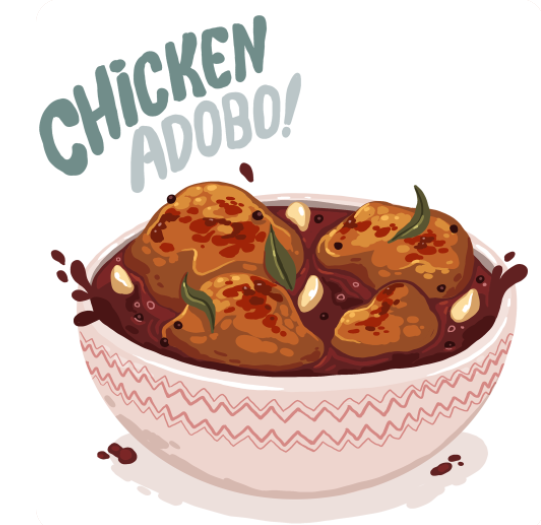

Adobo
Adobo is a simple and hearty Filipino dish. In this version, chicken is marinated in vinegar and soy sauce, then slowly cooked with garlic and spices. Serve over steamed white rice.

Ingredients
- 2 cups coconut vinegar
- ½ cup soy sauce
- 1 head garlic, peeled and coarsely chopped
- 10 bay leaves
- 1 tablespoon garlic powder
- 1 ½ teaspoons ground black pepper
- 1 ½ teaspoons annatto powder
- 5 ½ pounds cut-up chicken parts
- 3 tablespoons vegetable oil, divided
- 1 head garlic, peeled and coarsely chopped
- 1 ½ teaspoons annatto powder